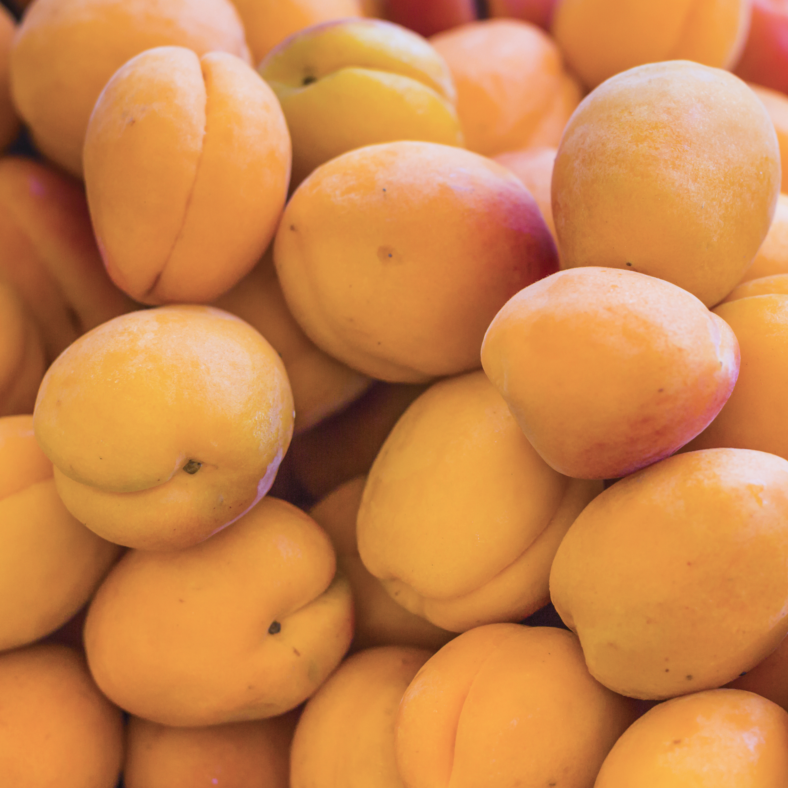

MANGO
Primera fruta

GUANABANA
Segundo fruta.
/cloudfront-us-east-1.images.arcpublishing.com/eluniverso/M4736VDUEFBNFLWIWYUZUUW53Y.jpg)
ZAPOTE
Tercera fruta.
Explorar las frutas extravagantes es una celebración de la diversidad de la vida vegetal y un recordatorio de que aún hay mucho por descubrir y disfrutar en nuestro mundo natural. Ya sea que busques nuevas sensaciones gustativas o simplemente desees conocer más sobre los tesoros ocultos de la naturaleza, las frutas extravagantes prometen una experiencia inolvidable que deleitará tus sentidos y enriquecerá tu conocimiento.
Primera fruta
Segundo fruta.
Tercera fruta.
Desarrollo de Brotes Florales: Todo comienza con el desarrollo de brotes florales en el árbol o planta. Estos brotes se transforman en flores, las cuales son esenciales para la polinización.
Polinización:Las flores deben ser polinizadas para que se inicie la formación del fruto. La polinización puede ocurrir a través del viento, insectos (como abejas) o aves. Durante este proceso, el polen se transfiere de las anteras al estigma de las flores.
Fecundación: Una vez que el polen llega al estigma, viaja a través del estilo hasta los óvulos en el ovario de la flor, donde ocurre la fecundación.
Formación del Fruto: Después de la fecundación, el ovario comienza a crecer y se transforma en un fruto. Los pétalos de la flor generalmente se marchitan y caen durante esta etapa.
Desarrollo Inicial:En las primeras etapas, el fruto comienza a desarrollarse rápidamente, incrementando en tamaño y cambiando de color. Las células del fruto se dividen y se expanden, acumulando agua y nutrientes.
Acumulación de Nutrientes: Durante el crecimiento, el fruto acumula azúcares, ácidos, vitaminas y otros compuestos que determinan su sabor y valor nutricional. Las hojas de la planta juegan un papel crucial en este proceso, ya que realizan la fotosíntesis para producir los azúcares necesarios.
Cambio de Color: A medida que el fruto madura, cambia de color debido a la degradación de clorofila y la síntesis de pigmentos como carotenos y antocianinas.
Desarrollo de Sabor y Textura: El sabor del fruto mejora a medida que los azúcares aumentan y los ácidos disminuyen. La textura también cambia, volviéndose más suave y jugosa en muchos casos.
Aromas y Fragancias: Durante la maduración, los frutos desarrollan sus características fragancias y aromas, que son el resultado de la producción de compuestos volátiles.
Momento Óptimo: La cosecha se realiza en el momento óptimo de madurez para asegurar la mejor calidad y sabor. Esto varía según el tipo de fruto y el uso previsto (consumo inmediato, almacenamiento o procesamiento).
Métodos de Cosecha: Los frutos pueden ser cosechados manualmente o mediante maquinaria especializada, dependiendo del tipo de fruta y la escala de producción.
Manejo y Almacenamiento: Después de la cosecha, los frutos deben manejarse con cuidado para evitar daños y preservar su frescura. El almacenamiento en condiciones controladas (temperatura, humedad y atmósfera) es crucial para prolongar su vida útil.
Distribución: Finalmente, los frutos se distribuyen a mercados, supermercados y consumidores, donde se disfrutan en su punto óptimo de frescura.
Nuestra prioridad es la calidad. Ofrecemos productos de alta gama.
Garantizamos entregas rápidas para que recibas tus pedidos a tiempo.
Estamos disponibles todo el día para ayudarte con cualquier consulta.